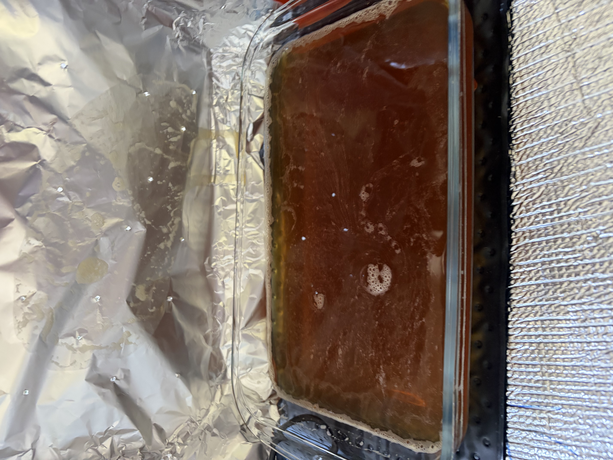
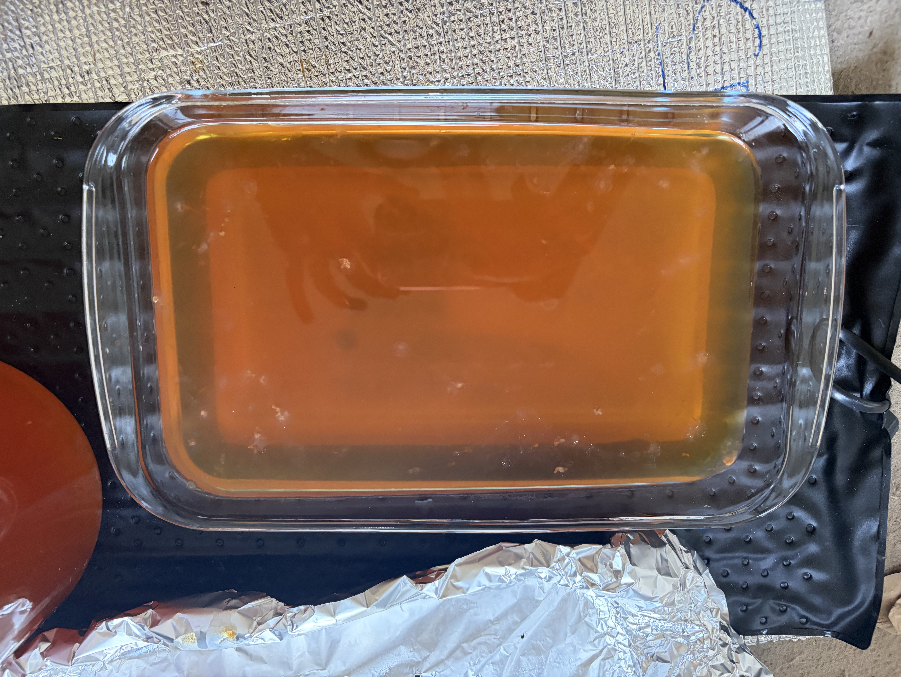
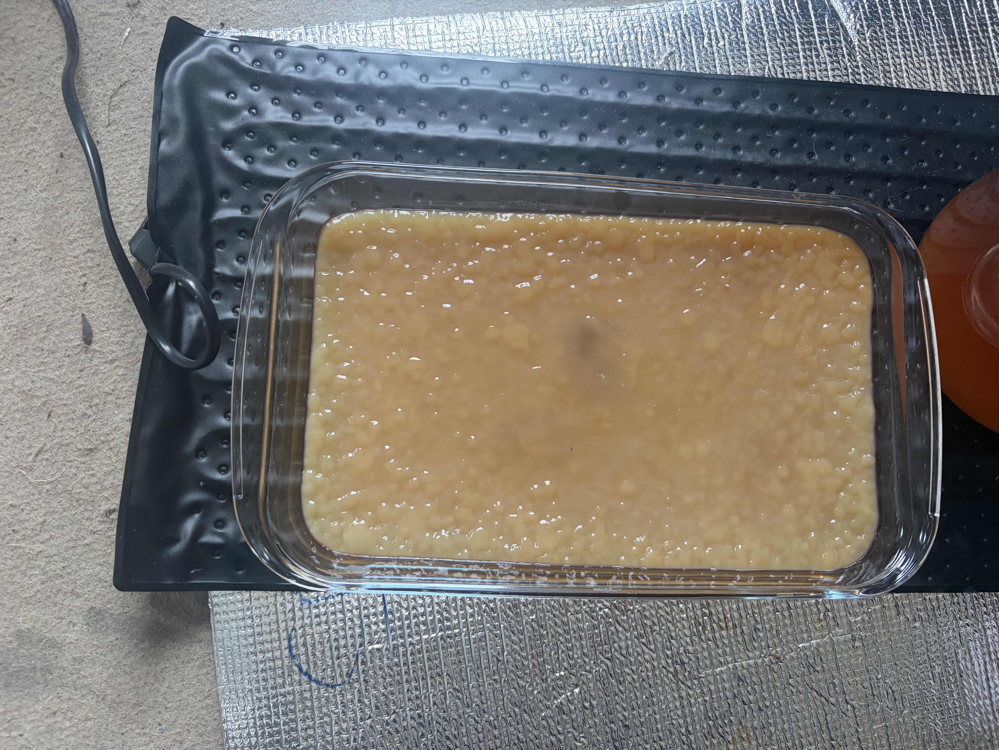

Bioleather is a sustainable alternative to traditional leather made from natural materials. I grew my own bioleather using a symbiotic culture of bacteria and yeast (SCOBY) and black tea (Yorkshire tea!).
Bioleather also known as kombucha leather is a plant based and vegan alternative to leather. It is grown via fermentation and made of bacterial cellulose nanofibres. Once grown, it can be dried and oiled to yield a flexible and durable material that can be modelled and sewn.
My SCOBY v2 - 3 June 2026
Method
After removing the previous SCOBY, I added 200ml of tea (containing 2 tea bags and 20g of sugar )
Stir liquid in dish
Leave flat dish on heating pad(~ 15C) and cover with cloth.
Observations:
(19 May)
orange/brown translucent liquid, with a few bubbles on the surface. Some small floating SCOBYs from previous batch.
My SCOBY — 18 May 2026
Method
Dissolve 150g caster sugar in 440ml boiling water.
Add 8 tea bags (YT), leave for 15 minutes, remove bags.
Let cool. Add 1L water.
Add 500ml ginger and turmeric kombucha.
Stir and fill flat dish approximately halfway.
Store remaining liquid in jars in the cold room.
Leave flat dish on heating pad(~ 15C) and cover with cloth.
Observations:
(19 May)
orange/brown translucent liquid, with a few bubbles on the surface. No visible growth yet.

(23 May)
Liquid slightly lighter in colour. Light sediment gathering at the bottom of the dish.
Topped up with ~100ml of tea.

(31 May)
Surface completely covered with ~2cm thick SCOBY.

(2 June)
SCOBY approximately 3cm thick. Removed from dish, cleaned with dish soap and dried.
Left to try on wooden sticks on heating mat (~15C).

Joe's SCOBY — 17 May 2026
I was gifted a Green tea SCOBY from a friend, Joe, who had been brewing kombucha for a while.
I added it to a tea mixture and left it to grow
Ingredients
400g water, 3 tea bags (YT), 50g caster sugar, ~30g green tea SCOBY, ~60ml starter liquid
Method
Boil 400ml water with 50g sugar and dissolve.
Add tea bags and brew for ~15 minutes.
Add to vessel with 900ml water to cool.
Add 30g SCOBY and 60ml starter liquid.
Observations
(19 May)